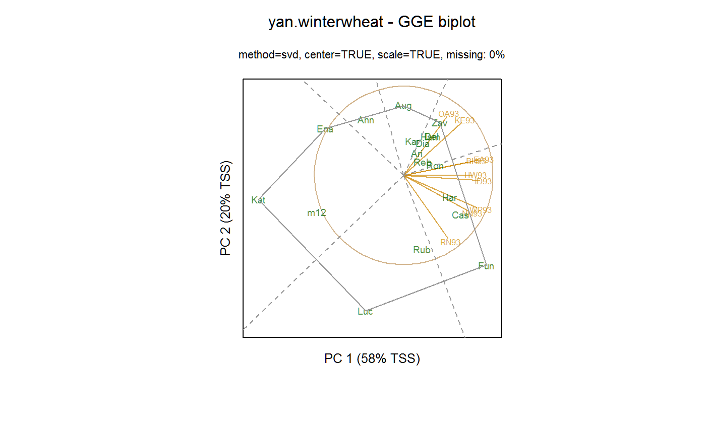

yan.winterwheat.RdYield of 18 varieties of winter wheat grown at 9 environments in Ontario in 1993.
The yield is the mean of several reps, measured in metric tons per hectare.
This data has often been used to illustrate GGE biplots.
A data frame with 162 observations on the following 3 variables.
gengenotype
envenvironment
yieldyield in metric tons per hectare
Used with permission of Weikai Yan.
Weikai Yan and M.S. Kang (2002). GGE biplot analysis: A graphical tool for breeders, geneticists, and agronomists. CRC. Page 59.
Weikai Yan and Nicholas A. Tinker. 2006. Biplot analysis of multi-environment trial data: Principles and applications. Table 1.
Weikai Yan and Manjit S. Kang and Baoluo Ma and Sheila Woods, 2007, GGE Biplot vs. AMMI Analysis of Genotype-by-Environment Data, Crop Science, 2007, 47, 641--653. https://doi.org/10.2135/cropsci2006.06.0374
# \dontrun{ library(agridat) data(yan.winterwheat) dat <- yan.winterwheat libs(gge) m1 <- gge(dat, yield ~ gen*env) biplot(m1, flip=c(1,1), hull=TRUE, main="yan.winterwheat - GGE biplot")# }